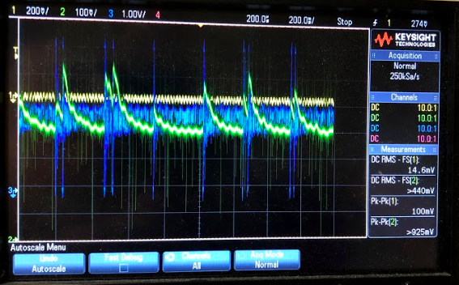
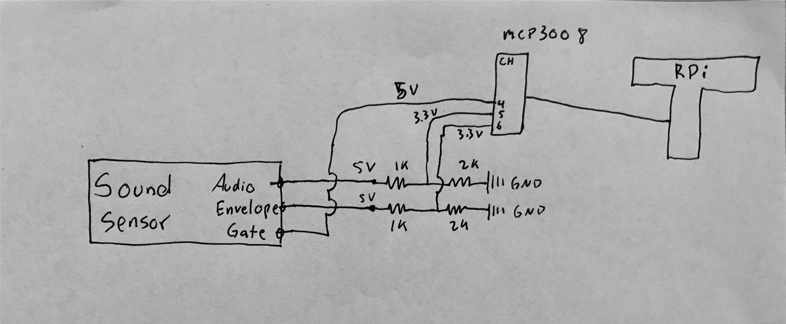

Step 1
> Using a breadboard, connect the MCP3008 as a substitute for the analog inputs (audio, envelop) to the board.
> After you connect the sound sensor, read the different values using an Oscilloscope. As shown on graph above: Gate(Yellow), Envelope(Green), Audio(Blue).
> RESULTS:
- Range of values:
Gate: High (1) when sound was detected (spoke into the sensor) or Low (0) when quiet. However, because the environment in our lab was loud, the oscilloscope graph output was noisy.
Envelope: As we spoke louder, the envelope increased in amplitude and stabilized as it got quiet.
Expectations: The sensor's output voltage was too high (5v) and the results were not exactly what we expected.
The logic gate was not changing, audio was very noisy, and the envelope would not stabilize properly.
Step 2
> In order to connect the sound sensor directly to the Raspberry Pi, you must step down the outputs (envelope and audio).
> Do this by integrating voltage divider (using 1k and 2k resistors) with a 5V input from the sensor to output 3.3v
> This new output (3.3v) will fix the logic level of the sound detetor and enable it to connect to eh MCP.
For visual reference look at schematic above.